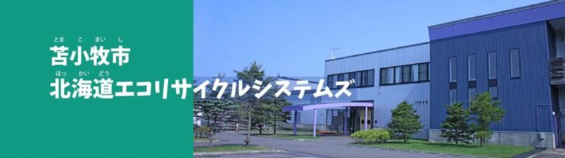
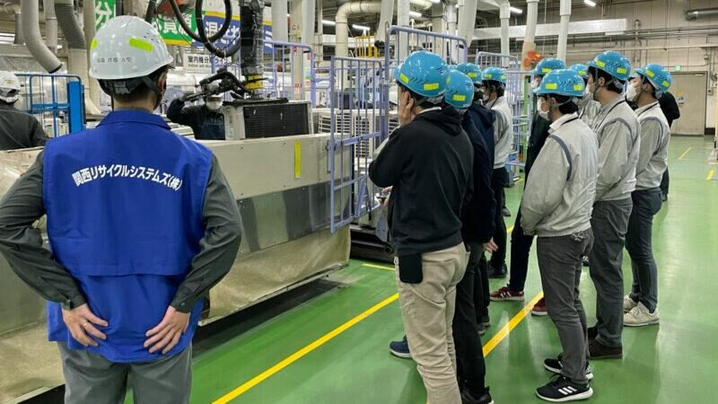

공식 방문 ① · 2일차 · 도마코마이시
주식회사 홋카이도 에코 리사이클 시스템즈 공장
Hokkaido Eco Recycle Systems Co., Ltd.
폐가전 4대 품목프레온 냉매 회수자동화 선별 라인재생 플라스틱 펠릿
일본의 ‘특정 가정용 기기 재활용법(가전리사이클법)’에 기반하여 설립된 주식회사 홋카이도 에코 리사이클 시스템즈는 도오(道央) 지역의 자원순환 체계를 견인하는 선진 친환경 플랜트입니다. 주요 가전 제조사들과 환경 전문 기업이 협력하여 구축한 이곳에서는 폐냉장고, 세탁기, 에어컨, 텔레비전 등 4대 폐가전을 대상으로 고효율 리사이클 공정을 가동하고 있습니다. 이번 공식 시찰에서는 온실가스 원인 물질인 프레온 냉매 가스를 안전하게 회수하고 기판과 모터 등 주요 부품을 선별 분리하는 정밀 수작업 해체 라인부터 참관합니다. 이어지는 공정에서는 대형 파쇄 설비를 거친 파쇄물이 자력 선별기, 비철금속 선별기, 풍력 및 비중 선별기를 통과하며 철, 구리, 알루미늄뿐 아니라 고순도 복합 플라스틱으로 정밀하게 분류되는 첨단 자동화 선별 라인을 직접 확인하게 됩니다. 최종적으로 자원화된 금속 원료와 재생 플라스틱 펠릿 샘플을 살펴보고, 현장 전문가와의 질의응답을 통해 폐기물의 고부가가치 자원화 기술과 친환경 안전 관리 운영 노하우를 폭넓게 파악할 수 있는 유익한 시간이 될 것입니다.
